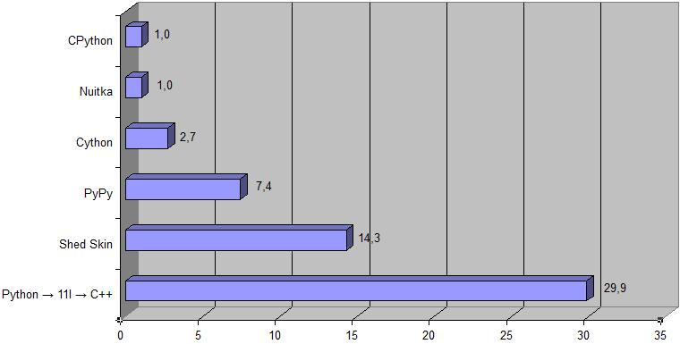

Транспайлер Python → 11l → C++ состоит из двух транспайлеров:
- Транспайлер Python → 11l, который переводит код на языке Python в код на новом языке программирования 11l.
- Транспайлер 11l → C++, который переводит код на языке 11l в C++ [который затем компилируется в машинный код].
В некотором смысле язык 11l выступает в роли промежуточного языка, но, так как он очень похож и близок к языку Python (правда семантически, а не синтаксически), то специально изучать его, в общем-то, не требуется.
Следует отметить, что особенностью данного транспайлера является то, что он генерирует человекочитаемый код на C++, что упрощает отладку написанной программы.
Производительность
Вот результаты для программы преобразования пк-разметки в HTML (в качестве исходных данных был взят исходник статьи по пк-разметке):

(Shed Skin не представлен здесь, т.к. он не поддерживает локальные функции.)
[Вот архив с использовавшейся программой для сравнения производительности [под Windows] (требуются установленный Python 3.6 или выше и следующие Python-пакеты: pywin32, cython).]
А вот результаты для задачи Простое число (при K = 1000000):

Вот соответствующий исходный код решения данной задачи на языке Python
import math
k = int(input())
n = k * 17
primes = [True] * n
primes[0] = primes[1] = False
for i in range(2, int(math.sqrt(n)) + 1):
if not primes[i]:
continue
for j in range(i * i, n, i):
primes[j] = False
for i in range(n):
if primes[i]:
if k == 1:
print(i)
break
k -= 1
А этот код {…
def is_right_triangle(x1, y1, x2, y2):
a = x1**2 + y1**2
b = x2**2 + y2**2
c = (x2 - x1)**2 + (y2 - y1)**2
return (a + b == c) or (b + c == a) or (c + a == b)
LIMIT = 51
ans = 0
for x1 in range(LIMIT):
for y1 in range(LIMIT):
for x2 in range(LIMIT):
for y2 in range(LIMIT):
if y2 * x1 < y1 * x2 and is_right_triangle(x1, y1, x2, y2):
ans += 1
print(ans)
(На основе этого решения.)
} в ~500 раз быстрее (если сравнивать транспайлер Python → 11l → C++ с CPython).
|
Скачать
Вот последняя версия пары транспайлеров Python → 11l и 11l → C++: 11l.tar.xz [репозитории с исходниками].
Использование:
- Распакуйте архив в каталог по вашему выбору.
- Откройте терминал/консоль/‘командную строку’.
- Выполните команду:
<путь_до_каталога_с_распакованным_архивом>\11l <исходный_файл_на_python_или_11l> в Windows или
<путь_до_каталога_с_распакованным_архивом>/11l <исходный_файл_на_python_или_11l> в Linux.
|